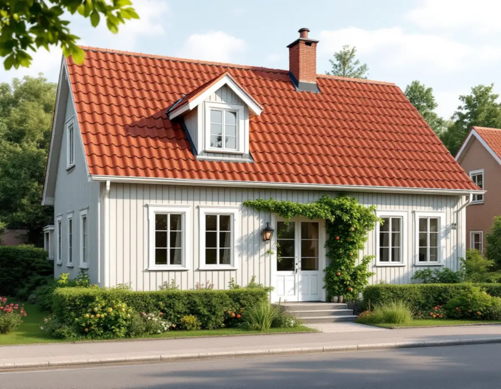
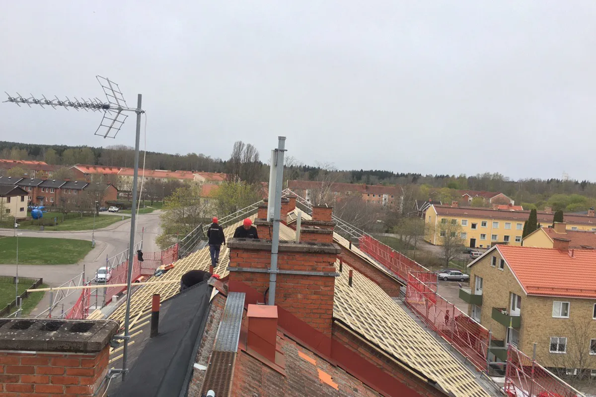
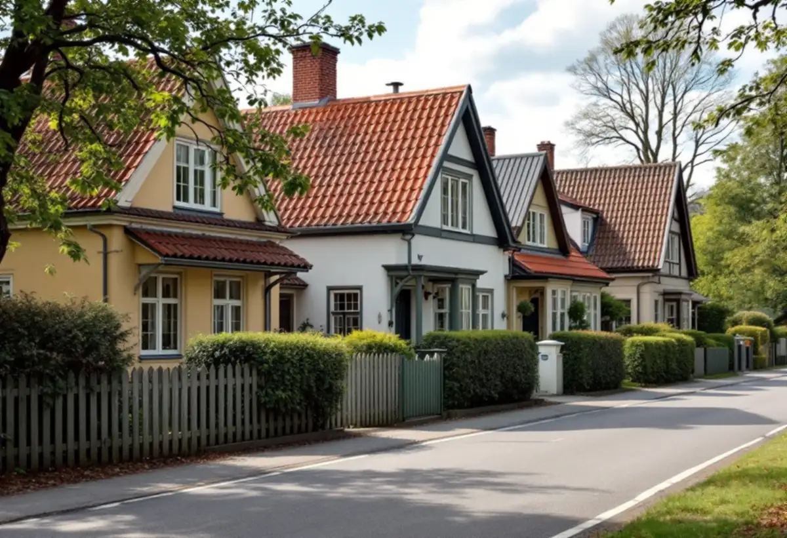

Kartan och planen
Stadsmuseets karta och detaljplanen kontrolleras för fastigheten.
Kungsholmen är mest känt för stenhus, men på Stora Essingen finns en villastad med egna trädgårdar och tegeltak. Den är utpekad som kulturhistoriskt värdefull miljö, och där är takets material och detaljer en del av helheten. Geal Entreprenad AB byter tak på villor och radhus på Stora Essingen och tar reda på vad som gäller för huset innan materialet väljs.

Stora Essingen hör till Kungsholmens stadsdelsområde. Stadens områdesfakta för 2025 visar 314 småhus på Stora Essingen, varav 268 med äganderätt, 35 hyresrätter och 11 bostadsrätter. I resten av stadsdelsområdet är småhusen mycket få.
I stadens strategi för småhusområden, Varsam, räknas Stora Essingen till villastäderna, och i strategins tabell är den markerad som kulturhistoriskt värdefull miljö. Det betyder att utökad lovplikt kan gälla för åtgärder som annars är lovfria.

Varsam beskriver villastäderna som privat organiserade, med en brokigare bebyggelse än i de egnahemsområden som staden planerade. Husen är i huvudsak enfamiljshus och individuellt utformade, och glasverandor, takkupor, snickarglädje och färgsättning ger en variation som är tydlig än i dag.
För ett takbyte betyder det att två grannhus sällan har samma tak. Kupor, frontespiser, skorstenar och takfotens utformning skiljer sig åt, och de detaljerna ska tillbaka på samma sätt när taket är lagt.
Boverket räknar ett byte till annat taktäckningsmaterial som en fasadändring, medan samma material och utförande räknas som underhåll. Boverket nämner också takkupor och frontespiser bland de byggnadsdelar där en ändring kan påverka husets karaktär och därmed kräva lov.
Stockholms stad skriver att du behöver söka bygglov för åtgärder i ett särskilt kulturhistoriskt värdefullt bebyggelseområde även om åtgärden annars är bygglovsbefriad, och hänvisar till Stadsmuseets klassificeringskarta som en första indikation. Vi kontrollerar kartan och detaljplanen innan något annat än samma material föreslås.
Stadsmuseet klassar byggnader och miljöer för att visa vilka kulturhistoriska värden som finns i staden. På klassificeringskartan är riksintressen för kulturmiljövården markerade med blå ring, områden som översiktsplanen pekar ut som särskilt kulturhistoriskt värdefulla med grön ring, och klassad bebyggelse med blått, grönt, gult eller grått.
Staden skriver att du behöver söka bygglov för åtgärder som annars kan vara lovfria om fastigheten ligger inom ett riksintresse eller ett särskilt värdefullt område, eller om byggnaden är markerad med blått eller grönt. Kartan uppdateras när nya bedömningar görs, så klassningen kan ändras över tid. Vi kontrollerar den aktuella kartan för just ditt hus.
Innan det gamla taket rivs fotograferar och mäter vi kupor, vindskivor, takfot, nock och plåtarbeten runt skorstenar. Det gör det möjligt att lägga tillbaka samma profiler och mått, och det ger ett underlag om staden behöver se hur taket såg ut före bytet.
Under pannorna ser vi över läkt, underlagstäckning och råspont, och plåten i ränndalar och vid kupor görs om i samma arbete. Om plåtarbeten på Kungsholmen kan du läsa under plåtslagare på Kungsholmen.
På en villatomt med uppvuxen trädgård gäller det att skydda växterna under arbetet. Vi planerar var ställning och container kan stå och hur material kommer fram, så att arbetet stör grannarna så lite som möjligt.
Om tjänsten i stort kan du läsa under takbyte, och om skillnaden mot en renovering under takbyte eller takrenovering.

Stadsmuseets karta och detaljplanen kontrolleras för fastigheten.
Taket, kuporna och detaljerna går vi igenom och dokumenterar.
Material, plåtarbeten och detaljer redovisas var för sig.
Ska materialet bytas tas frågan till staden innan beställning.
Gammalt tak rivs, underlaget ses över och nytt tak läggs med samma detaljer.
Vi går igenom taket och detaljerna med dig.
Skatteverket räknar byte och reparation av takpannor och hängrännor på ett småhus som rotarbete, när du äger och bor i huset eller har det som fritidshus.
Avdraget är högst 30 procent av arbetskostnaden, högst 50 000 kronor per person och år och högst 75 000 kronor tillsammans med rutavdrag. Material och resor ger inget avdrag. Geal drar avdraget direkt på fakturan.
Takets yta och form, antal kupor och skorstenar, materialval, underlagets skick och hur ställning och material kan placeras. En överblick finns i vad kostar ett takbyte. Efter ett gratis platsbesök får du ett skriftligt kostnadsförslag.
Byte av tegel-, betong- och plåttak.
Takbyte →Takbyte, takbesiktning och plåtarbeten.
Takläggare på Kungsholmen →Plåttak i stenstaden och funkis i Fredhäll.
Takrenovering på Kungsholmen →Gårdshus vid villorna på Stora Essingen.
Attefallshus på Kungsholmen →Stambyte, stämmobeslut och 30-talshus.
Badrumsrenovering på Kungsholmen →Föreningens stambyte.
Byggföretag på Kungsholmen →Målning av puts och gårdsfasader.
Fasadmålning på Kungsholmen →Slätputs på funkishus, lagad utan synliga skarvar.
Fasadrenovering på Kungsholmen →Stenhusen, funkishusen och bygglovet.
Fönsterbyte på Kungsholmen →Fönstret i bostadsrätten, insida och beslag.
Fönsterrenovering på Kungsholmen →Stegljud, golvval och styrelsens tillstånd.
Golvläggare på Kungsholmen →Slipa och lacka golvet i bostadsrätten.
Golvslipning på Kungsholmen →Fläkten, kanalen och föreningen.
Köksrenovering på Kungsholmen →Funkislägenheter, stadgar och ROT i bostadsrätten.
Målare på Kungsholmen →Huvar, skorstenar och genomföringar.
Plåtslagare på Kungsholmen →Förvaring och platsbyggt i små lägenheter.
Snickare på Kungsholmen →Ny tapet på putsade lägenhetsväggar.
Tapetsering på Kungsholmen →Uterum, kupor och skärmtak.
Tillbyggnad på Kungsholmen →Hela lägenheten från golv till tak.
Totalrenovering på Kungsholmen →